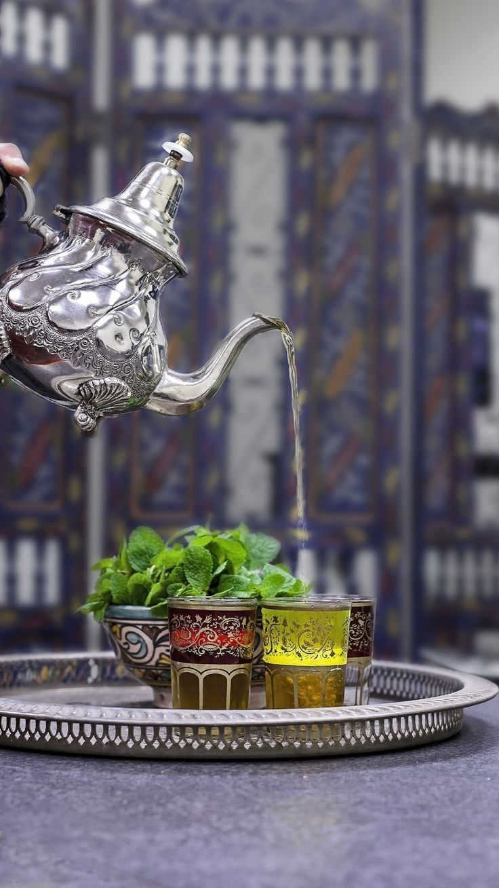

Porter l’eau.à ébullition.
Rincer la menthe et bien la laisser égoutter.
Mettre le thé vert dans un filtre et le faire infuser dans une théière avec l’eau chaude pendant deux minutes.
Remplir deux verres de menthe fraîche et verser le thé vert dessus.
Laisser infuser trois minutes.
Selon les goûts, le thé peut être agrémenté de miel.
